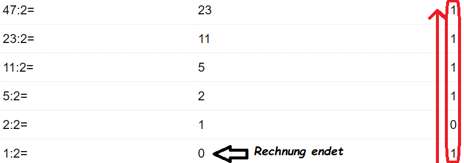

Eine Dezimalzahl kannst du ganz einfach in eine Binärzahl umwandeln,
indem du die Zahl durchgehend durch 2 dividierst und so einen Rest erhälst. Wenn das Ergebnis 0 beträgt, bist du fertig und bekommst eine Binärzahl.
Hier ein kleines Beispiel:
47 ergibt die Binärzahl 101111 (rückwärts gelesen).
